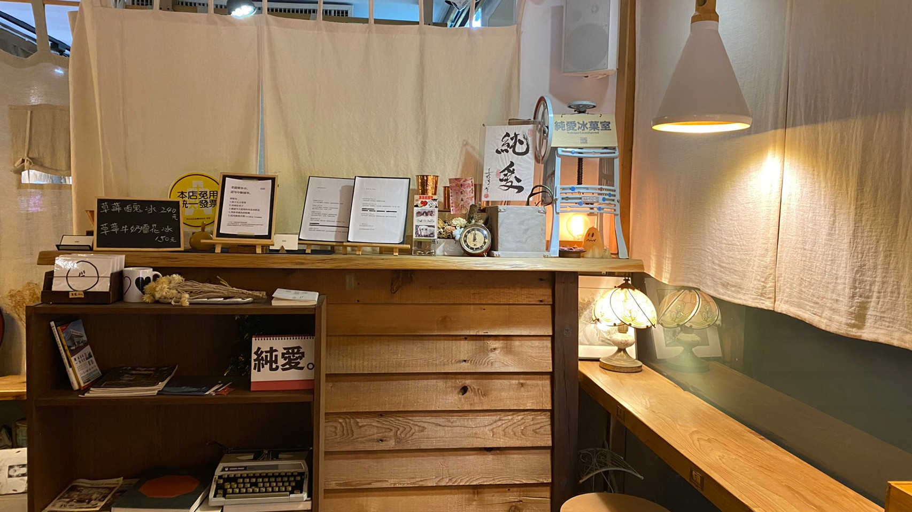
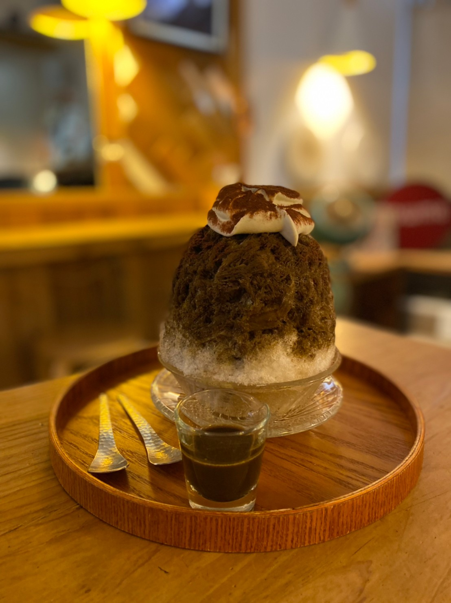

炎炎夏日 徐徐微風 寄身於小巷弄的日式文青
其和風的木質裝潢使夏天看著清爽 冬日看著溫暖 頗顯快活
01th December 2021

關於「純愛」:
前身為鹽埕町，是自家人延續下來的店面再重新裝潢，並命名為"純愛冰菓室"。
純愛，純純的戀愛，在一個充滿溫馨的日系復古小店裡，
邊吃著冰的同時也將彼此的心又拉得更近了一些，
有的人靜靜品嘗冰的層次風味，也有人透過它來交流深處的友誼與愛情。
而純愛所獨有的髒髒冰，其實一點也不髒，甚至讓人有視覺上的華麗感，而味覺上也能吃出它的細膩濃郁。
就算如此廣受喜好，卻又不因此而擴大張揚，而是隱藏在小小的巷弄裡，
用低調的黑白"純愛"來當店門口的招牌，使得它與所賣的冰品產生極大的對比，
我想，老闆的發想也頗有個性吧，慢工出細活，曖曖內含光
純愛，純純的戀愛，在一個充滿溫馨的日系復古小店裡，
邊吃著冰的同時也將彼此的心又拉得更近了一些，
有的人靜靜品嘗冰的層次風味，也有人透過它來交流深處的友誼與愛情。
而純愛所獨有的髒髒冰，其實一點也不髒，甚至讓人有視覺上的華麗感，而味覺上也能吃出它的細膩濃郁。
就算如此廣受喜好，卻又不因此而擴大張揚，而是隱藏在小小的巷弄裡，
用低調的黑白"純愛"來當店門口的招牌，使得它與所賣的冰品產生極大的對比，
我想，老闆的發想也頗有個性吧，慢工出細活，曖曖內含光

焙茶醜冰
刨冰一上桌就使人驚艷萬分，也終能體悟為何有如此多人慕名而來，
切記，由上往下挖，一方面能避免冰品倒塌，
令一方面才能讓你有層次的品嘗它的與眾不同，
你先吃到的會是刨冰的細膩冰沙感，再來真正的主角焙茶才會慢慢出場，
濃郁的茶香瞬間與刨冰融為一體，
舌尖上微甜的觸感加上一點茶本身的澀味，這就是獨有的成熟大人味。
而此冰品最大的亮點，就是老闆自製的馬斯卡彭起司!
奶香比市售的更濃郁，再加上起司上方的無糖可可粉，
吃起來又有更多的味道，也不會因為一直吃單一口味而變得了無特色；
大人的味外表藏著小孩純真的內心，如果想要再大人味一點，
也是有附上手刷焙茶讓客人自行增加茶味，
這就是來自店家給顧客最大的用心
切記，由上往下挖，一方面能避免冰品倒塌，
令一方面才能讓你有層次的品嘗它的與眾不同，
你先吃到的會是刨冰的細膩冰沙感，再來真正的主角焙茶才會慢慢出場，
濃郁的茶香瞬間與刨冰融為一體，
舌尖上微甜的觸感加上一點茶本身的澀味，這就是獨有的成熟大人味。
而此冰品最大的亮點，就是老闆自製的馬斯卡彭起司!
奶香比市售的更濃郁，再加上起司上方的無糖可可粉，
吃起來又有更多的味道，也不會因為一直吃單一口味而變得了無特色；
大人的味外表藏著小孩純真的內心，如果想要再大人味一點，
也是有附上手刷焙茶讓客人自行增加茶味，
這就是來自店家給顧客最大的用心
小山園抹茶拿鐵
是杯偏小眾款的飲品，推薦給抹茶的超級愛好者還有同時喜歡無糖的人！
上層的抹茶與下層的鮮奶行成完美的漸層，
攪拌後更是有馬卡龍的夢幻感，
混合後的抹茶味依然濃郁，也掩蓋了許多純抹茶粉的原有苦味，
留下的只有香濃滑順，真正由內而外的大人味代表，
值得一試，如同人生，苦盡甘來
上層的抹茶與下層的鮮奶行成完美的漸層，
攪拌後更是有馬卡龍的夢幻感，
混合後的抹茶味依然濃郁，也掩蓋了許多純抹茶粉的原有苦味，
留下的只有香濃滑順，真正由內而外的大人味代表，
值得一試，如同人生，苦盡甘來
地點 : 高雄市鹽埕區富野路
營業時間 : 一 : 公休 | 二 ~ 五 :
56
巷
10
號 營業時間 : 一 : 公休 | 二 ~ 五 :
13:30-20:00
| 六、日 :
12:00-20:00